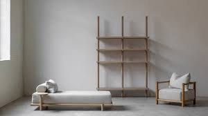

Decluttering Your Home
Start small. Choose one room to focus on, such as the kitchen or bedroom, and remove any items you haven’t used in the past six months. Ask yourself: Do I really need this? Does it add value to my life?
Decluttering Tips
Decluttering is the foundation of minimalist living. It’s about removing excess items and making space for what truly matters. Here are practical steps to help you declutter effectively:
- Start Small: Begin with one room or area, like your closet or workspace.
- Set Goals: Define what you want to achieve with decluttering and set realistic milestones.
- Use the “Keep, Donate, Toss” Method: Sort your items into three categories to streamline the process.
- Go Digital: Don’t forget about digital clutter. Organize your files, emails, and apps.
- Stay Consistent: Make decluttering a regular habit to prevent re-accumulation of items.
Digital Decluttering
Our digital spaces can get just as cluttered as our physical ones. Take time to clean up your inbox, delete unused apps, and organize your files into clear folders. You’ll feel lighter and more organized.
Sustainable Decluttering
When letting go of items, think about sustainability. Donate to local charities, recycle electronics, or hold a garage sale to give your belongings a second life.
Your Decluttering Checklist
- Start with one small area (e.g., closet)
- Sort items into "Keep, Donate, Toss" piles
- Organize remaining items in a functional way
- Digitally declutter (files, emails, apps)
- Maintain regular decluttering habits
For more tips, download our free decluttering checklist and keep track of your progress!
Your Decluttering Progress
Progress: 0%